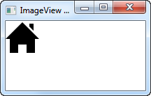

JavaFX ImageView
El control ImageView de JavaFX puede mostrar una imagen dentro de una GUI de JavaFX. El control ImageView se debe añadir al gráfico de escena para que sea visible. El control JavaFX ImageView está representado por la clase javafx.scene.image.ImageView.
Creación de una vista de imagen
Una instancia del control ImageView se crea creando una instancia de la clase ImageView. El constructor de la clase ImageView necesita una instancia de javafx.scene.image.Image como parámetro. El objeto Image representa la imagen que mostrará el control ImageView.
Por ejemplo:
FileInputStream input = new FileInputStream("resources/images/iconmonstr-home-6-48.png");
Image image = new Image(input);
ImageView imageView = new ImageView(image);Primero se crea un FileInputStream que apunta al archivo de imagen de la imagen a mostrar.
En segundo lugar, se crea una instancia de Image, pasando FileInputStream como parámetro al constructor de Image. De esta manera, la clase Imagen sabe desde dónde cargar el archivo de imagen.
En tercer lugar, se crea una instancia de ImageView, pasando la instancia de Image como parámetro al constructor de ImageView.
Ejemplo completo:
public class ImageViewExperiments extends Application {
@Override
public void start(Stage primaryStage) throws Exception {
primaryStage.setTitle("ImageView Experiment 1");
FileInputStream input = new FileInputStream("resources/images/iconmonstr-home-6-48.png");
Image image = new Image(input);
ImageView imageView = new ImageView(image);
HBox hbox = new HBox(imageView);
Scene scene = new Scene(hbox, 200, 100);
primaryStage.setScene(scene);
primaryStage.show();
}
public static void main(String[] args) {
Application.launch(args);
}
}Resultado:
